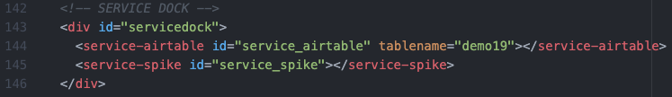
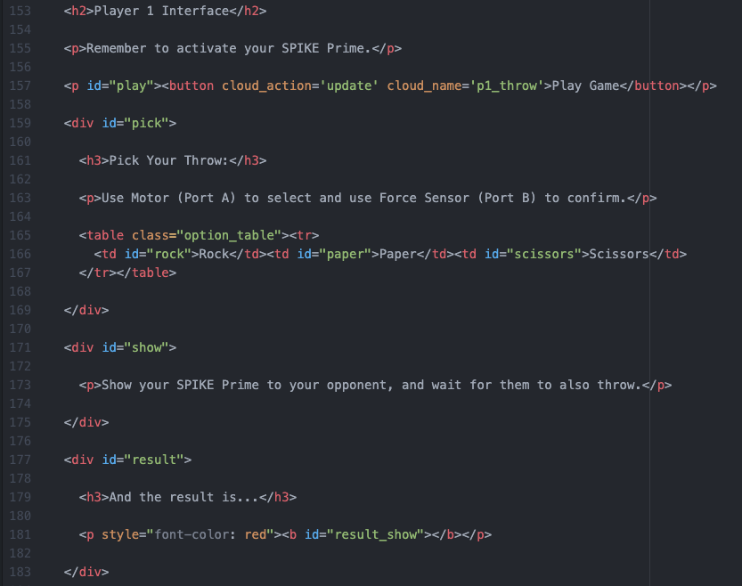
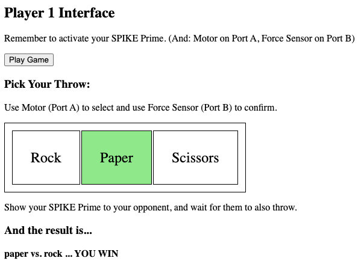
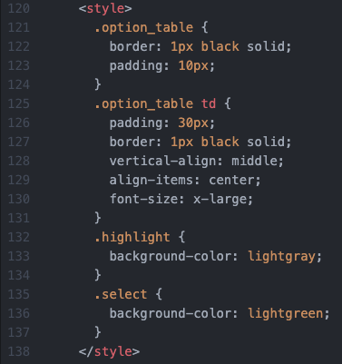

Service Dock
The remote page has the Airtable Service Dock element. Make sure to update the tablename attribute to match your table name.
Interface
This is what the interface will look like for Player 1 (after the game has been played):
Note that, also within the HTML code, is the Cloud Monitoring elements. These are all hidden from view, but are still in the page, activated, and monitoring the Cloud for changes.
For debugging, to see these rendered in the page, change the
style="display: none" to be style="display: inline"
Here are all the JavaScript Functions that help the page run:
onload_pre(): this function runs when the page loads,
and is designed to "reset" everything (page elements, style, etc)
Note: the styles used by the page are as follows. Beyond formatting, this also has highlight (color the table element gray) and select (color the table element green) for the user selecting their throw choice.
onload_post(): this function runs after the Cloud Service
has been configured and started. It monitors (to make sure the Cloud Service
is Active) and then clears out the p1_throw and
p2_throw values in the Cloud.
When the Play Game button is pushed, the p1_throw value is
updated, and the monitor will trigger the start_game() function.
This function reveals the throw-selector table, and then starts monitoring
the motor (see next function).
The monitor_motor() function constantly checks the SPIKE Prime's
motor position (mySPIKE.Motor('A').get_position()) and based
on the position determines what type of throw the user wants. (The motor
position is passed to eval_motor_position that passes back
a string of "rock", "paper", or "scissors".)
The Force Sensor is monitored (mySPIKE.ForceSensor('B').is_pressed())
and when pressed, the Cloud Name p1_throw is set to whatever
the current choice is ("rock", "paper", or "scissors").

When the p1_throw value changes to "rock", "paper", or "scissors"
(as monitored by the Cloud Monitoring elements in the HTML), the
game_throw() function is triggered. The main functionality of this
is to then "wait for Player 2 to make their choice." This is achieved by
constantly calling the monitor_throw() function that checks
the p2_throw value to see if the opponent has thrown yet.
When both p1_throw and p2_throw have been thrown,
it is time to show_result(): even though the result is already
known, this function does a countdown ("3" ... "3" ... "1" ... on the
SPIKE Prime LED Matrix) routine and then (1) displays what Player 1 threw
on the SPIKE Prime LED Matrix and (2) shows the overall result (Win, Lose, Tie)
in the webpage.